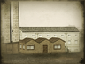

Requires
Enables
- Buildings: 
Basic Building Statistics (can be modified by difficulty level, arts, skills, traits and retainers)
- Cost: 7200
- +5 per turn to town growth from industrial buildings within this province
- +1700 to wealth generated by industrial buildings in this province
- -2 to happiness from modernisation
Clan Effects
- +3 to modernisation (clan development)
Description
The ticking clock, not a falling blossom, measures a man's life.
A factory significantly adds to the economy, and acts as a force for further economic growth. The Industrial Revolution in England and then across Europe changed the way that common people lived forever. Before the coming of factories, people lived and died without ever going more than a few miles from where they were born. Their days were marked by the passing of the seasons, and the position of the sun. Factories took all that away: the clock and the weekly pay packet, suitably reduced by charges imposed by factory owners, became the rhythm of life. Life in the fields had been hard, but life in the factories was equally so, and without the benefits of fresh air.